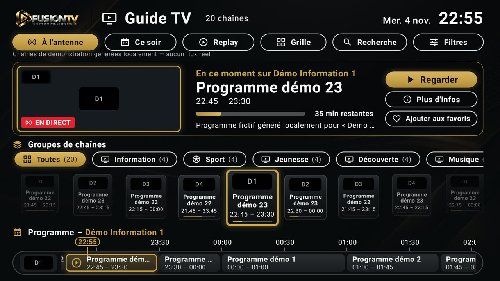
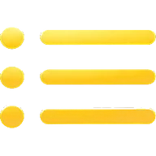
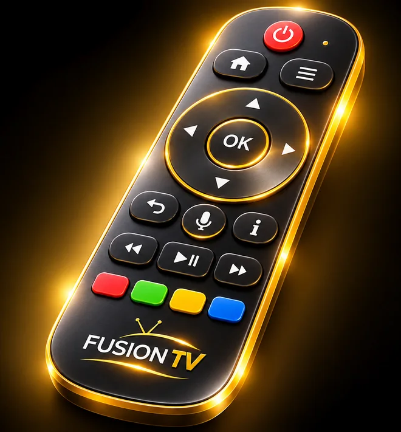

TV en direct
Navigation entre les chaînes, catégories et programmes disponibles depuis les sources de l'utilisateur.
Votre expérience multimédia sur grand écran.
FUSION TV est un lecteur multimédia conçu pour Android TV et Google TV. Organisez vos sources personnelles et profitez d'une interface pensée pour la télévision et la télécommande.



FUSION TV lit les sources que vous ajoutez vous-même. L'application ne fournit aucune chaîne, aucun film ni aucune série.
Navigation entre les chaînes, catégories et programmes disponibles depuis les sources de l'utilisateur.
Catalogue visuel, recherche, filtres, fiches détaillées et reprise de lecture.

Consultation des programmes lorsque les données EPG sont disponibles.
Compatibilité M3U/M3U8 et Xtream.
Accès rapide aux contenus enregistrés et récemment consultés.
Interface conçue pour Android TV et Google TV, utilisable à la télécommande.

Les flèches pour se déplacer, OK pour choisir, Retour pour revenir : chaque écran se parcourt depuis le canapé, sans clavier ni souris.
Captures réelles de l'application sur téléviseur.
FUSION TV s'installe sur les téléviseurs et boîtiers Android TV et Google TV (Android 8.0 ou plus récent), à partir du fichier APK publié ici. L'application n'est pas distribuée sur Google Play.
Bêta privée gratuite — activation requise
SHA-256 : 10faa0fade40472b2221a94edc2a6637a207b9386fd98b33ba47c2953cbac7d6 · Versions précédentes
Sur le téléviseur : dans Downloader, saisissez le code 9685240, ou l'adresse fusion-tv.fr/fusion-tv.apk dans Downloader ou le navigateur.
Source officielle unique : FUSION TV se télécharge uniquement sur fusion-tv.fr. Tout fichier obtenu ailleurs n'est pas officiel : ne l'installez pas et n'y saisissez jamais vos identifiants.
Certificat de signature (SHA-256) : 0D:AD:98:66:A2:3F:52:40:DA:49:B4:9F:B3:B8:06:6E:13:50:91:73:82:4B:B7:AD:1A:00:26:B7:1B:5F:C5:2E
Bêta privée gratuite
L'application est actuellement en développement et proposée gratuitement en bêta. Chaque téléviseur bénéficie d'un essai de 7 jours, et les testeurs qui le souhaitent peuvent ensuite demander une prolongation gratuite. Les retours permettent d'améliorer sa stabilité, son ergonomie et ses fonctionnalités.
FUSION TV est un lecteur multimédia indépendant, développé dans le cadre d'un projet personnel. Il n'est affilié à aucun fournisseur IPTV.
FUSION TV ne fournit, n'héberge ni ne vend de chaînes de télévision, films, séries ou abonnements IPTV. L'utilisateur doit disposer de ses propres sources et des droits nécessaires pour accéder aux contenus.
L'application est en bêta privée gratuite : sans publicité, sans revenus commerciaux et sans abonnement. Une éventuelle commercialisation future ferait l'objet d'une décision distincte et d'un réexamen des licences des services utilisés.
Données fournies par
Lorsque le fournisseur ne donne pas l'information, certaines fiches sont complétées grâce à l'API TMDB : classifications d'âge françaises, sagas, synopsis, genres, distribution, affiches et bandes-annonces.
Ce produit utilise l'API TMDB mais n'est ni approuvé ni certifié par TMDB.